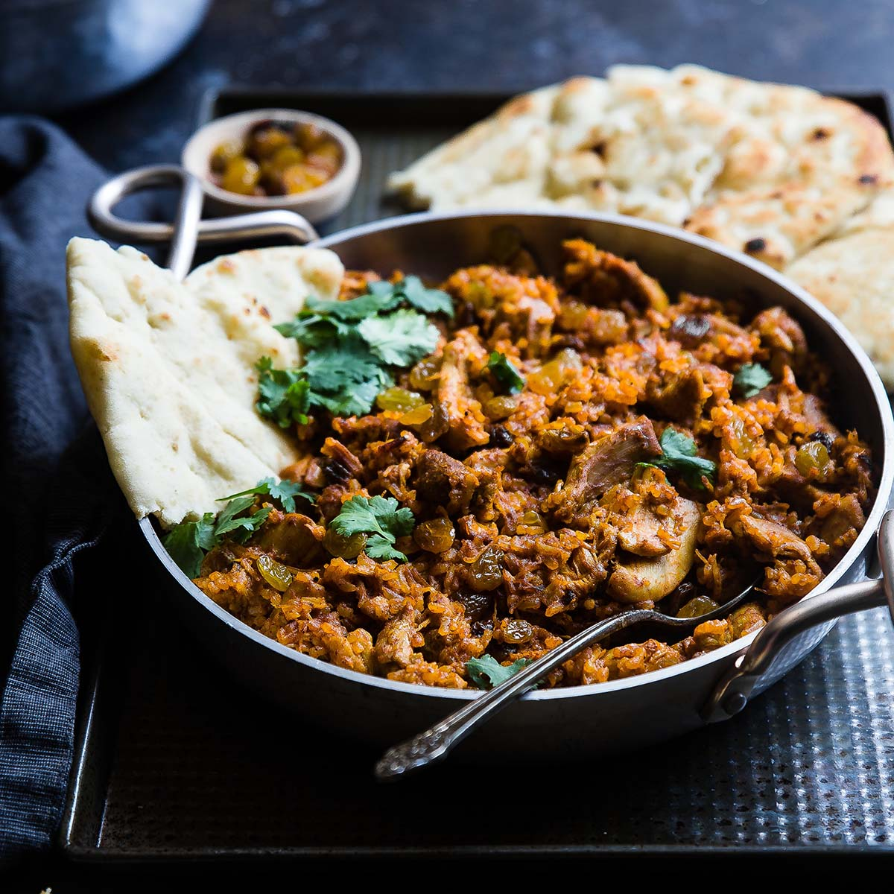

Rodica's Chili

Description
This is my wife's chili recipe.
She tends to just throw things in the pot and go with it!
Regardless, it is very tasty.
You can serve it with sourcreame, cheeder cheese, or even tortilia chips on top.
We also serve it with rice (white or brown).
Ingredients
- Red beans, 2 cans
- White beans, 1 can
- Hamburger, about 300gr
- Chili powder
- Diced tomatoes, 2 cans
- Cumin
Steps
- Brown hamburger
- Add hamburger, beans, and tomatoes in pot and heat.
- Add chili powder and cumin to taste
- Boil white rice
- Serve with cheeder cheese and sourcreame!